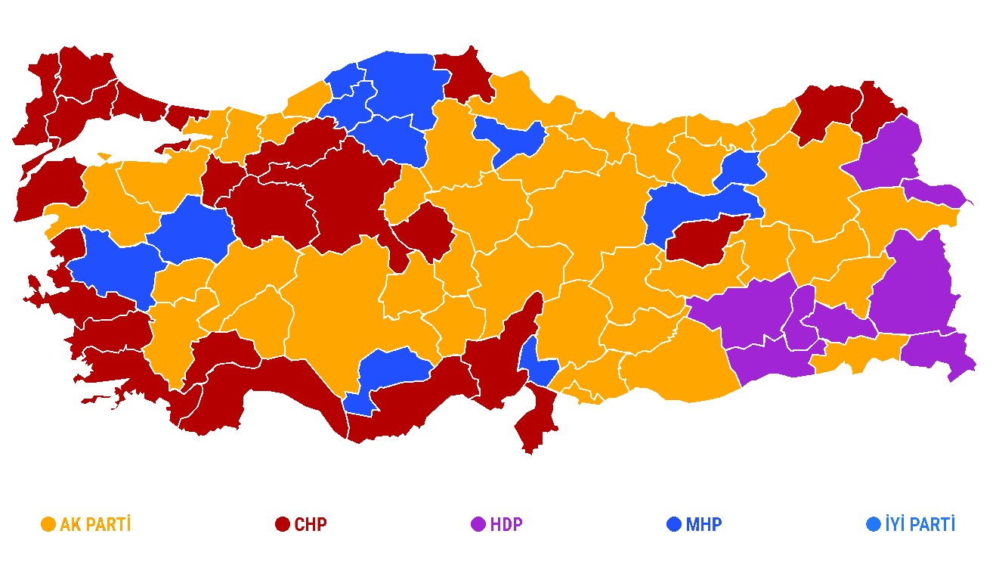
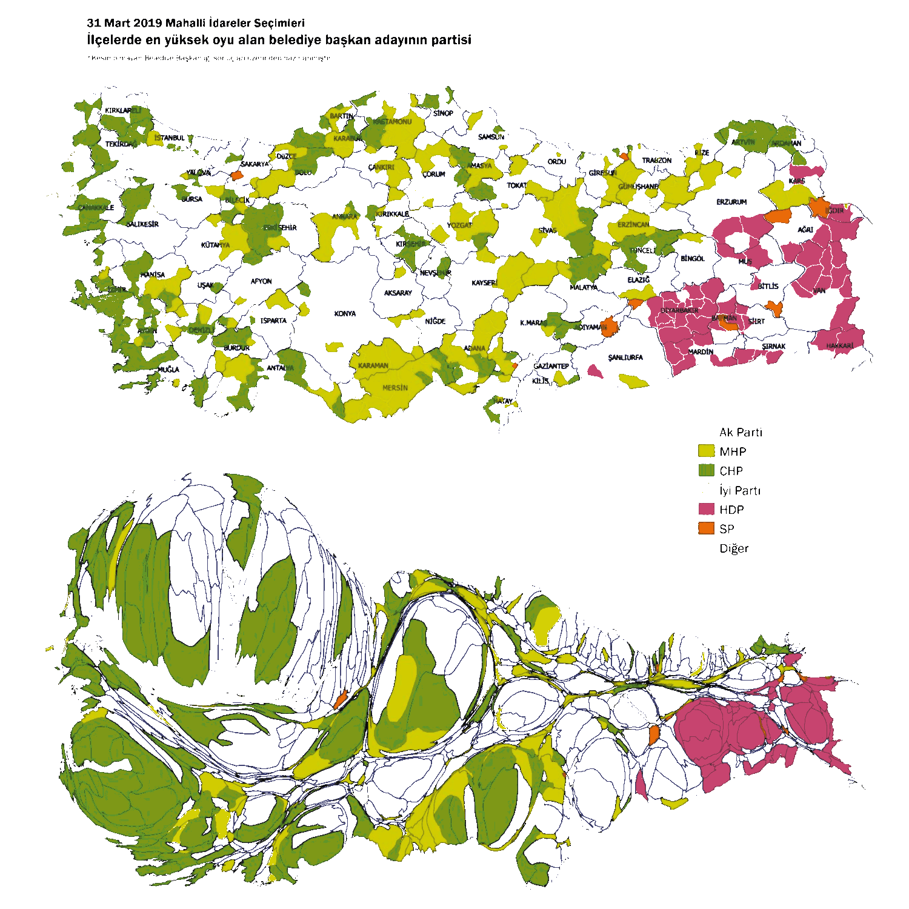
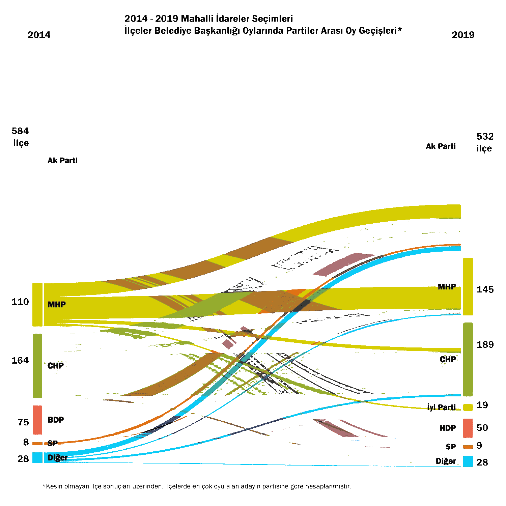

Özellikle büyük miktarlardaki verinin doğru analiz edilebilmesinde verinin görselleştirilmesinin büyük payı var. Örnek olarak Türkiye’nin 31 Mart 2019 Yerel Seçimleri’ni ele alalım. Hemen hemen bütün basın kuruluşlarında il bazında sonuçlar sunulduğu için şehirler arasında çok keskin bir hat varmış izlenimi uyanır, örneğin bir gazetenin sitesinden görebileceğimiz standart harita şudur:1

Oysa veriyi ne kadar temel parçalara bölerseniz o kadar daha sağlıklı işlersiniz. Konda2 araştırma şirketinin raporunda da görebileceğimiz gibi ilçeler bazında aslında harita şudur:

İlk grafik Türkiye’nin coğrafi haritasında oyların dağılımı. Oysa nüfus yoğunluğu her yerde aynı değil, örneğin Konya’nın yüzölçümü İstanbul’dan çok daha fazla olduğu için ilk haritada renkler adil bir şekilde dağılmış değil. Daha doğru bir ifadeyle ilk haritaya bakıp da bir rengin fazlalığını, ülkede karşılık gelen partiye büyük bir destek olması olarak yorumlamak yanlış olacaktır!
Yukarıdaki ikinci haritaya cartogram deniyor: Türkiye’deki ilçeler nüfuslarına orantılı olacak şekilde büyütüp küçültülmüş durumda. Yani bu cartogram’da renklerin oranı partier arasındaki desteğin oranını doğru bir şekilde ifade ediyor. Örneğin ilk resimde sarı ve yeşil renklerin hemen hemen aynı miktarda olmasına rağmen ikinci resimde gördüğümüz gibi CHP’ye olan destek (yeşil) MHP’ye olan destekten (sarı) çok daha fazla!
Veriyi küçük parçalara ayırıp analiz etmek gibi farklı verileri kümelendirip istatistiksel bir sonuç çıkarmaya da çalışabiliriz. Örneğin Konda’nın aynı raporunda şöyle bir grafik de var:
Bu haritada renkler belli bir partiye karşılık gelmiyor. Ayrıca harita sadece 2019 yerel seçimlerinin değil, son üç seçimin verilerinin toplamından üretilmiş durumda. Kısacası, ülkedeki insanların siyasi profilini kümelendirecek olursak, ortaya 3 farklı küme çıkıyor (bir de geçiş kümesi var, açık yeşil renk). Detayları merak eden bağlantısını paylaştığım rapora bakabilir.
Veri görselleştirmesinden verebileceğimiz bir başka örnek de Sankey diagramı:

Bu diagram belediyelerin son iki seçim arasında nasıl el değiştirdiğini görselleştiriyor. Sankey diagramları bir setteki elemanların (yukarıdaki durumda belediyeler) farklı iki kümelenmeleri (yukarıdaki durumda 2014 ve 2019 seçimleri) arasındaki geçişi göstermek için ideal araşlardan biri.
Elbette sadece bir diagramdan yola çıkarak yorum yapmak oldukça sığ olur. Örneğin yukarıdaki diagrama göre mor renkteki değişim (AKP belediye sayısındaki değişim) 2014 ve 2019 arasında oldukça az, oysa aynı veriyi belediye sayısı yerine belediyelerdeki nüfus olarak bakacak olsaydık durum oldukça farklı olurdu. Ben bu seçimleri konuyu örneklemek için kullandım, fakat daha detaylı merak eden varsa Konda’nın raporuna bakmasını tavsiye ederim.3